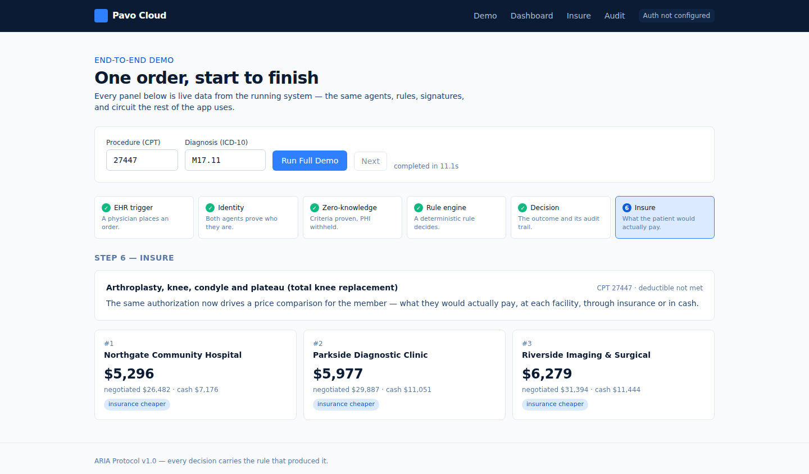
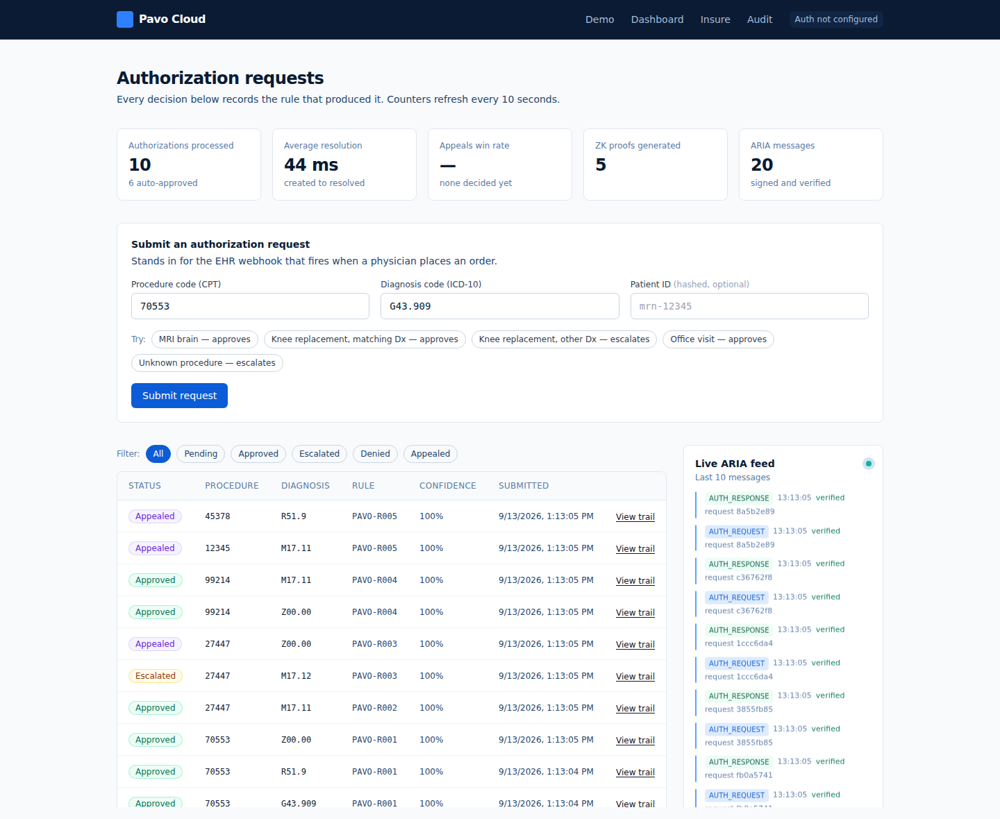

Round 1 argued that prior authorization is slow because a person has to start every request. Round 2 is the working system: all four build phases complete and running — the autonomous authorization loop, consumer price transparency, cryptographic identity with autonomous appeals, and zero‑knowledge proofs over patient criteria.
Every number in this report was measured on the committed code on 13 September 2026, not estimated. The commands that reproduce them are listed in §6.3.
The core claim from Round 1 — that a routine authorization can be decided without a human touching a form — now has a number attached. A complete request, from simulated EHR webhook through FHIR assembly, RSA signing, signature verification, rule evaluation and a five‑entry audit trail, resolves in a median of 88.6 ms. The industry baseline is 3–14 days.
| Area | Round 1 position | Round 2 position, and why it moved |
|---|---|---|
| Decision speed | "Under 5 minutes" | Measured at 88.6 ms median for the agent loop. The five‑minute figure now covers the round trip including EHR write‑back and payer network latency; the agent work is sub‑second. |
| AI architecture | "Deterministic layer + predictive layer" | Built, and the split is stricter than described. No language model touches an authorization decision. The probabilistic layer is confined to document parsing, CPT mapping, and appeal drafting — each thresholded, each escalating below threshold. |
| Privacy | "Minimum necessary, encrypted" | Stronger. Patient identifiers are SHA‑256 hashed before storage, and a Groth16 circuit proves three coverage criteria without transmitting age, diagnosis or deductible at all. |
| Financials | Break‑even to 87% margin; $1.0M → $8.2M → $36.1M |
Revenue targets held, but rebuilt bottom‑up from customer counts and measured infrastructure cost rather than asserted. Year 1 gross margin is 31% — pilots are delivered near cost — reaching 87% by Year 3. The Year 1 figure was optimistic and is corrected here. |
The rule engine cannot return an outcome without a rule_id. That ID is written to audit_log on every decision and returned in the API response. There is no code path that produces an unexplained outcome. 6 tests
The rule set ends in a catch‑all, PAVO-R005, whose outcome is ESCALATED. Anything the system does not have a definitive rule for routes to a human with the record already assembled. Escalation is the fallback, not an exception path. verified live
Signature verification runs before the payload is read. A tampered or unsigned envelope is rejected with HTTP 401, the rejection is audited, and the rule engine is never reached. 4 tests
A denial is either appealed or escalated. When the payer agent rejects an appeal it returns ESCALATED under PAVO-A002 — never DENIED. A machine cannot issue a final no to a patient in this system. 2 tests
One order, end to end. Solid arrows carry data; the dashed arrow is the only path a human sits on. Timings are measured medians.
Verification is the first thing the payer agent does, and it happens before the payload is deserialised into anything the rule engine can see. This is not a validation step running alongside processing — it is a gate. Provenance is established, or nothing happens. A judge testing this can tamper with any signed field and watch the request die with a 401 and an aria.verification.failed audit row.
Round 1 described a deterministic layer and a predictive layer. The built system draws the line harder than that. The rule is enforced by the shape of the code: a language model never renders an authorization decision.
| Layer | What it does | Where it runs | Guarantee |
|---|---|---|---|
| Deterministic decides |
Identity verification, coverage rules, ZK verification, pricing arithmetic, denial classification. | rules.py, aria.py, crypto.py, zk/prover.py, classifier.py |
Same input always yields the same output. Every outcome traces to a named rule ID. Confidence is 1.0 because the match is definitive, not because a model is sure. |
| Probabilistic assists |
Insurance‑card and EOC parsing, plain‑language → CPT mapping, appeal letter drafting. | insure/parser.py, insure/cpt.py, appeals/letter.py |
Output is scored and thresholded. Below threshold it escalates. It is never the last word on whether a patient gets care. |
Triggered only by a DENIED outcome. Two hard stops sit ahead of anything a model produces.
DENIED
└─ classify_denial(reason_code)
exact X12 CARC match → keyword → "other"
│
├─ not_covered ──────► ESCALATE, no letter
│ Coverage is a contract question,
│ not a clinical one. HARD STOP.
│
└─ medical_necessity | missing_info | other
├─ PubMed E-utilities → top 3 abstracts
│ unreachable → 0 citations, flow
│ continues and reports the failure
├─ Claude drafts letter + PMID cites
│ → confidence score
├─ ≥ 0.70 → sign ARIA APPEAL → payer
│ payer > 0.85 → APPROVED PAVO-A001
│ payer ≤ 0.85 → ESCALATED PAVO-A002
│ never DENIED
└─ < 0.70 → ESCALATE with reviewer
notes pre-populated: procedure,
diagnosis, category, confidence,
every citation retrieved
Classification is deterministic on purpose: the whole path forks on that one call, so it reads exact X12 CARC codes first (50, 96, 16, 204, 252) before falling back to ordered keyword groups. An unrecognised reason becomes other, which still gets an appeal.
The consumer layer — where the probabilistic layer does most of its work, and where every output is labelled by source.
card.jpg + eoc.pdf
├─ member ID → SHA-256 → storage path
│ uses the hash, never the raw ID
├─ Claude vision (card) ─┐
├─ Claude document (EOC) ┴► insurance_plan
├─ plain language → Claude → CPT code
│ cpt_source: "claude" | "sample"
├─ 5 facility quotes, deterministic from CPT
├─ estimate_member_cost() per facility
│ not met: min(cash, coins × negotiated)
│ met: coins × negotiated
└─ rank by what the member actually pays
→ audit_log, entity_type='price_query'
| Facility | Negotiated | Cash | You pay |
|---|---|---|---|
| Northgate Community | $26,482 | $7,176 | $5,296 |
| Parkside Diagnostic | $29,887 | $11,051 | $5,977 |
| Riverside Imaging | $31,394 | $11,444 | $6,279 |
| Clearview Ambulatory | $34,397 | $7,275 | $6,879 |
| Metro Valley Medical | $38,857 | $12,608 | $7,771 |
From POST /api/insure/query, 13 Sep 2026. Every row ships a breakdown object showing the arithmetic. Spread between best and worst: $2,475 for the same procedure.
A 68‑line circom circuit compiled to Groth16 over BN254, proving three things while transmitting none of the data behind them: the patient meets the age floor, the diagnosis matches the covered condition, the deductible requirement is satisfied. A live proof returns six public signals — three verdicts, three policy parameters — and nothing else. A dedicated test asserts the private inputs never appear in the response body.
zk/build.sh runs its own local Powers of Tau ceremony, so whoever builds the artifacts knows the toxic waste — fine for a prototype, never for production.
Evaluated in order, first match wins — so the specific knee rule is checked before the general one. Precedence is a property of the list, and it is tested. GET /api/rules returns this table at runtime, which is how the dashboard explains a decision back to a user.
| Rule | Procedure | Diagnosis | Outcome |
|---|---|---|---|
PAVO-R001 | 70553 MRI brain | any | approved |
PAVO-R002 | 27447 knee replacement | M17.11 | approved |
PAVO-R003 | 27447 knee replacement | any other | escalated |
PAVO-R004 | 99214 office visit | any | approved |
PAVO-R005 | anything else | any | escalated |
Five rules prove the mechanism, not a market. Scaling the list is costed as the largest COGS line in §9.3.
The seven fields above the signature are the ones it covers; change any byte and verification fails.
{ "aria_version": "1.0",
"message_id": "2531910f-3984-4a82-94d9-efa08…",
"timestamp": "2026-09-13T12:37:07.533216Z",
"sender": { "agent_id": "agent://pavo/provider/…",
"npi": "1234567893", "verified": true },
"receiver": { "agent_id": "agent://pavo/payer/…",
"payer_id": "MER001" },
"payload_type": "AUTH_REQUEST",
"payload": { "procedure_code": "27447",
"diagnosis_code": "M17.11",
"patient_id": "pat_94cc12784b6586…",
"fhir_bundle": {…} },
"signature": "<RSASSA-PSS over SHA-256 of the above>" }
Note patient_id — the hash is what travels, and it is the only patient identifier the payer ever receives.
Repository hwangus922/AI2O-Pavo-Cloud: twelve commits across five merged pull requests — one per phase, plus a hardening pass. Everything below was captured from the running system on 13 September 2026.
git log --first-parent a13f6cb$ git log --first-parent --date=short --pretty="%h %ad %s" a13f6cb a13f6cb 2026-09-12 Fix the three failures that break a deployed demo (#5) abc1b5c 2026-09-09 Phase 4: demo flow, audit UI, and a real ZK proof (#4) 99bbb96 2026-09-08 Phase 3: autonomous appeals and cryptographic identity (#3) 5f26194 2026-09-07 Phase 2: Insure price transparency (#2) e48ec54 2026-09-07 Phase 1: autonomous prior authorization core loop (#1) d5ea3a7 2026-09-07 Initial commit $ git log --shortstat a13f6cb # summed 12 commits (6 on main, 6 on phase branches) 170 file changes +19541 insertions -367 deletions
| Phase | Diff | Delivered |
|---|---|---|
| #1 core loop | +9,429 | Agents, ARIA v1.0, FHIR R4, rule engine, audit log, dashboard |
| #2 Insure | +2,364 | Document parsing, CPT mapping, the ranking algorithm |
| #3 identity | +2,948 | RSA‑2048 signing, denial classifier, appeals, the 0.70 threshold |
| #4 ZK & demo | +3,922 | circom circuit, snarkjs bridge, six‑step demo, audit explorer |
| #5 hardening | +409 | Key rotation across restarts, CORS, demo documents |
$ .venv/bin/python -m pytest ........................................................ ................ [ 52%] ........................................................ .......... [100%] 138 passed, 1 warning in 22.37s
115 functions, 138 cases — rules 6 · flow 19 · insure 32 · appeals 29 · zk 22 · persistence 7. They cover every rule and its precedence, raw PHI never reaching storage, tamper rejection, every appeal outcome, and that private ZK inputs never appear in a response.
$ curl -X POST localhost:8000/api/auth/request \
-d '{"procedure_code":"27447","diagnosis_code":"M17.11",
"patient_id":"mrn-99001"}' -w ' total: %{time_total}s'
{
"outcome": "APPROVED",
"rule_id": "PAVO-R002",
"confidence": 1.0,
"status": "approved",
"patient_id": "pat_293e86d31f97652092022a1076aee370"
}
total: 0.090117s
Note patient_id: mrn-99001 went in, a SHA‑256 hash came back. The raw identifier never reaches storage.

/demo — all six steps from live data, no input after the first click. Measured across three consecutive runs: 11.00 s, 11.07 s, 11.17 s.

/dashboard — every decision with its rule, 44 ms average resolution, live ARIA feed. The Escalated row is PAVO-R003, waiting for a human.
The governing principle: the safe outcome is the default, not the exception. Every failure mode below resolves toward a human or toward a refusal to act — never toward a guess. Each row names the code path that enforces it and the test that proves it.
PAVO-R005, a catch‑all whose outcome is ESCALATED. A request for a procedure with no coverage rule cannot fall through to an approval or a denial; there is no such path. verified live: CPT 12345 → PAVO-R005
audit_log as aria.verification.failed with the reason, and the rule engine is never invoked. Applies identically to authorization requests and appeals. test_tampered_envelope_fails_verification
not_covered denial is a contract question, not a clinical one. No letter drafted, no evidence gathered, no model called. Straight to a person. test_not_covered_skips_the_appeal_and_escalates
PAVO-A002, an escalation. No code path issues a final denial to a patient without a licensed human. test_payer_escalates_rather_than_finally_denying
0.0, below threshold, so every appeal escalates — the degraded state is the safe state, and /health reports it rather than hiding it. When PubMed is blocked the appeal completes with zero citations and records the failure; confidence drops, which pushes it into human review. Failures propagate into caution, not into a worse letter.
| Failure | Detection | Automated response | Human SLA | Owner |
|---|---|---|---|---|
| Ambiguous clinical case | No definitive rule match | Status set to escalated; FHIR bundle, rule trace and audit trail attached | 4 business hours | Payer clinical reviewer |
| Forged or replayed message | Signature verification | HTTP 401 before parsing; rejection audited with reason | Immediate alert | Pavo security on‑call |
| Low‑confidence appeal | Score < 0.70 | Held; reviewer notes generated; never transmitted | 1 business day | Provider appeals staff |
| Model provider outage | claude_configured / API error | Labelled placeholder at confidence 0.0 → universal escalation. Core authorization loop unaffected. | None required | Pavo platform |
| Evidence source down | HTTP failure on E‑utilities | Zero citations, failure recorded, confidence lowered | Follows appeal SLA | Provider appeals staff |
| Key rotation on restart | Verification failure against old key | Previous key revoked before new one registered; one active key per org enforced | None required | Pavo platform |
| Rule library drift | Quarterly criteria diff vs. payer‑published policy | Affected rules flagged; requests matching them escalate until re‑validated | 5 business days | Pavo clinical informatics |
| Demographic skew in outcomes | Quarterly audit of approval rates across demography, geography, diagnosis | Rules driving a disparity are suspended to ESCALATED pending review | Quarterly cycle | Pavo clinical + compliance |
| Control | Enforcement |
|---|---|
| Raw PHI never stored | Patient identifiers SHA‑256 hashed at the request boundary, before the first write. Verified by test_raw_patient_id_is_never_stored. |
| Member IDs hashed too | Including the ID read off an insurance card; the hash, not the raw value, forms the storage path. |
| Private keys never persisted | org_keys holds the public key and a SHA‑256 digest of the private key. Nothing else. Verified by test_private_keys_are_never_stored. |
| Minimum necessary by construction | The ZK circuit lets a payer confirm eligibility criteria without receiving age, diagnosis code, or deductible amount at all. |
| Sample data always labelled | Without model credentials the parsers return obvious placeholders, and both the API response and the UI say so. Nothing silently invents a member's plan. |
| Immutable decision record | Five audit entries per authorization, each with before and after state. The decision row always carries its rule_id. |
These are prototype limitations we would rather state than be asked about.
| Gap | Plan |
|---|---|
| ZK diagnosis check is single‑hash design limit | A passing proof reveals which covered diagnosis the patient carries. Needs a Merkle set‑membership circuit. Scoped for the next phase. |
| Trusted setup is local not production safe | build.sh runs its own Powers of Tau, so the builder knows the toxic waste. Production requires a multi‑party ceremony. |
| NPI verification is a flag stubbed | Currently set from the seeded organisation record. Needs a live NPPES/CMS enrollment lookup with a cached mirror. One integration. |
| Facility pricing is mocked stubbed | Deterministic from the CPT code, not gathered. Replaced by the Vapi voice agent plus payer machine‑readable transparency files. |
| Five rules, not a rule library scope | Enough to prove the mechanism, not a market. The commercial build is clinical informaticists encoding each payer's published criteria — costed as a named COGS line in §9. |
| Predictive classifier not built deliberate | The threshold and its config key exist; the model does not. Until it does, non‑definitive cases escalate. That is the correct default and we are in no hurry to change it. |
| Federated learning not built deliberate | Round 1 roadmap item. Not started, and not on the critical path to revenue. |
The Phase 2 specification defines member cost as min(cash, coinsurance × negotiated) before the deductible is met and coinsurance × negotiated after. We implemented that verbatim, and it is not how a real plan behaves — before the deductible is met a member normally owes the full negotiated rate, with coinsurance beginning afterwards. One visible consequence: at a typical 20% coinsurance the insurance path always beats cash, so the cash‑is‑cheaper case, which is the product's central insight, only surfaces at higher coinsurance.
We are flagging this rather than quietly fixing it because it illustrates the discipline we want judged: the specification and the implementation agree, the divergence from reality is documented, and there is exactly one function to change — estimate_member_cost in insure/ranking.py. Changing it is a product decision, and we would rather make it with a payer in the room than guess.
Pavo never judges medical appropriateness. The rule engine matches published criteria; it does not form a clinical opinion. Every denial reaches a licensed human. Structurally enforced, not policy‑enforced.
Approval rates audited quarterly across demography, geography and diagnosis. Because every decision carries a rule ID, a disparity is traceable to the specific rule producing it — and that rule can be suspended to ESCALATED in one change.
Cross‑organisation messages are signed and verified against registered public keys. A payer can prove which provider sent a request and that nothing was altered in transit. This is what makes an agent‑to‑agent network auditable.
Built bottom‑up from customer counts and measured infrastructure cost. The full workbook — seven tabs, every formula live — accompanies this report as Pavo_Cloud_3Yr_Financial_Model.xlsx. Every input on this page is a driver in that file.
| Driver | 2026 | 2027 | 2028 | Basis |
|---|---|---|---|---|
| Provider groups — ending | 110 | 560 | 2,240 | Sales plan |
| Provider groups — average active | 55 | 330 | 1,400 | Monthly weighted |
| Physicians per group | 8 | 8 | 8 | Mid‑market target |
| Prior auths per physician per week | 30 | 30 | 30 | Conservative vs. AMA's 43–45 |
| Share routed through Pavo | 25% | 40% | 50% | Grows with rule coverage |
| Authorizations per group per year | 3,120 | 4,992 | 6,240 | Calculated |
| Total authorizations processed | 171,600 | 1,647,360 | 8,736,000 | |
| Payer contracts — average active | 11 | 84 | 160 | About 18% of the ~900 CMS‑0057‑F payers by 2028 |
| Stream | 2026 | 2027 | 2028 | Price |
|---|---|---|---|---|
| Per‑authorization fees | $514,800 | $4,942,080 | $26,208,000 | $3.00 / auth |
| Provider subscriptions | $264,000 | $1,584,000 | $6,720,000 | $400 / mo |
| Payer compliance API | $220,000 | $1,680,000 | $3,200,000 | $20,000 / yr |
| Total revenue | $998,800 | $8,206,080 | $36,128,000 | +722% / +340% |
This reconciles to the $1.0M / $8.2M / $36.1M presented in Round 1 — but those figures were asserted, and these are derived. The $3.00 authorization fee remains 85–92% below the $15–$40 payers spend manually today.
| Line | 2026 | 2027 | 2028 | Driver |
|---|---|---|---|---|
| Cloud infrastructure — compute, DB, storage, egress | $54,000 | $198,000 | $900,000 | Volume + 7‑yr retention |
| Model API — Insure parsing, appeal drafting | $11,000 | $62,000 | $280,000 | Not on the auth path |
| Clinical rule library — informaticists | $189,000 | $455,000 | $1,080,000 | 1.5 → 3.5 → 8.0 FTE |
| Implementation & onboarding | $224,000 | $476,000 | $1,428,000 | 2.0 → 4.0 → 12.0 FTE |
| Customer support | $92,000 | $190,000 | $784,000 | 1.0 → 2.0 → 8.0 FTE |
| Security & compliance — SOC 2, pen test, HIPAA/BAA | $118,000 | $112,000 | $290,000 | Type II in Yr 1 |
| Total cost of revenue | $688,000 | $1,493,000 | $4,762,000 | |
| Gross profit / gross margin | $310,800 · 31% | $6,713,080 · 82% | $31,366,000 · 87% |
| Metric, at 2028 economics | Provider group | Payer | Blended |
|---|---|---|---|
| Annual revenue per account | $23,520 | $20,000 | $23,159 |
| Gross profit per account (86.8%) | $20,420 | $17,364 | $20,106 |
| Annual logo churn | 5% | 2% | 4.7% |
| CAC | $6,000 | $22,000 | $6,699 |
| LTV, 3‑year | $58,248 | $51,057 | $57,533 |
| LTV, 5‑year | $92,387 | $83,415 | $91,530 |
| LTV : CAC (3‑year) | 9.7× | 2.3× | 8.6× |
| CAC payback | 3.5 mo | 15.2 mo | 4.0 mo |
CAC falls from $9,500 (2026) to $6,000 (2028) for provider groups and $34,000 to $22,000 for payers. LTV is stated on a 3‑year horizon deliberately; the 5‑year figure is shown for comparison but we do not underwrite on it.
| 2026 | 2027 | 2028 | |
|---|---|---|---|
| Revenue | $998,800 | $8,206,080 | $36,128,000 |
| Cost of revenue | ($688,000) | ($1,493,000) | ($4,762,000) |
| Gross profit | $310,800 | $6,713,080 | $31,366,000 |
| Gross margin | 31% | 82% | 87% |
| Research & development | ($680,000) | ($2,100,000) | ($4,680,000) |
| Engineers | 4 | 12 | 26 |
| Sales & marketing | ($1,657,000) | ($6,678,000) | ($12,260,000) |
| New logos acquired | 128 | 592 | 1,830 |
| General & administrative | ($340,000) | ($1,150,000) | ($3,200,000) |
| Total operating expense | ($2,677,000) | ($9,928,000) | ($20,140,000) |
| EBITDA | ($2,366,200) | ($3,214,920) | $11,226,000 |
| EBITDA margin | (237%) | (39%) | 31% |
Peak cumulative burn: $5.58M, reached in Q4 2027. The company turns EBITDA‑positive during 2028.
| If this is wrong | 2028 revenue |
|---|---|
| Base case | $36.1M |
| CMS‑0057‑F slips a year → payer count halves | $34.5M |
| Pavo‑routed share is 35%, not 50% | $28.3M |
| Provider groups reach 900 average, not 1,400 | $24.4M |
| Auth fee compresses to $2.00 | $27.4M |
| All four together | $13.8M |
The model's single greatest exposure is the provider group count, not price. Volume drives 73% of 2028 revenue.
$8.0M covers the $5.58M peak burn with twelve months of buffer past EBITDA breakeven. It funds, in order of how much it de‑risks the plan: